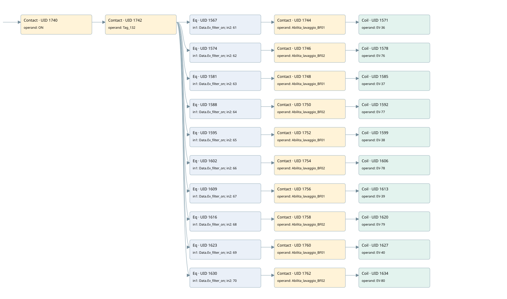

wash filter
filter · 검색 색인 순서 15 · 원본 내부 NID 추정 15
백업 PLF 원본의 2743284 바이트 위치에서 복원한 XML. 검색 문서 1896의 객체 키 161022004011000000000000와 연결했다. 이름 해석 42/42개. 남은 RefId는 상수 또는 미해석 참조다.
연결 구조 다시 그리기
원본 Part/PCon/Wire를 이용한 연결도다. TIA 화면의 래더 배치 또는 실행 결과를 재현한 그림은 아니다. 핀 연결은 아래 표와 원본 XML을 기준으로 읽는다. 노드 위에 마우스를 두면 피연산자 이름을 볼 수 있다.

접점·코일·블록과 피연산자
| Part UID | Gate | Negated 핀 | 연결 피연산자 |
|---|---|---|---|
| 1740 | Contact | operand = ON | |
| 1742 | Contact | operand = Tag_132 | |
| 1567 | Eq | in1 = Data.Ev_filter_on; in2 = 61 | |
| 1744 | Contact | operand = Abilita_lavaggio_BF01 | |
| 1571 | Coil | operand = EV-36 | |
| 1574 | Eq | in1 = Data.Ev_filter_on; in2 = 62 | |
| 1746 | Contact | operand = Abilita_lavaggio_BF02 | |
| 1578 | Coil | operand = EV-76 | |
| 1581 | Eq | in1 = Data.Ev_filter_on; in2 = 63 | |
| 1748 | Contact | operand = Abilita_lavaggio_BF01 | |
| 1585 | Coil | operand = EV-37 | |
| 1588 | Eq | in1 = Data.Ev_filter_on; in2 = 64 | |
| 1750 | Contact | operand = Abilita_lavaggio_BF02 | |
| 1592 | Coil | operand = EV-77 | |
| 1595 | Eq | in1 = Data.Ev_filter_on; in2 = 65 | |
| 1752 | Contact | operand = Abilita_lavaggio_BF01 | |
| 1599 | Coil | operand = EV-38 | |
| 1602 | Eq | in1 = Data.Ev_filter_on; in2 = 66 | |
| 1754 | Contact | operand = Abilita_lavaggio_BF02 | |
| 1606 | Coil | operand = EV-78 | |
| 1609 | Eq | in1 = Data.Ev_filter_on; in2 = 67 | |
| 1756 | Contact | operand = Abilita_lavaggio_BF01 | |
| 1613 | Coil | operand = EV-39 | |
| 1616 | Eq | in1 = Data.Ev_filter_on; in2 = 68 | |
| 1758 | Contact | operand = Abilita_lavaggio_BF02 | |
| 1620 | Coil | operand = EV-79 | |
| 1623 | Eq | in1 = Data.Ev_filter_on; in2 = 69 | |
| 1760 | Contact | operand = Abilita_lavaggio_BF01 | |
| 1627 | Coil | operand = EV-40 | |
| 1630 | Eq | in1 = Data.Ev_filter_on; in2 = 70 | |
| 1762 | Contact | operand = Abilita_lavaggio_BF02 | |
| 1634 | Coil | operand = EV-80 |
접점 경로를 펼친 조건식
Contact·O/A·비교기의 원본 연결을 읽기 쉽게 펼친 보조 해석이다. POWER는 전원 레일 시작을 뜻한다. 호출 블록·에지·타이머의 내부 동작과 다중 쓰기 순서는 이 표로 실행 검증하지 않았다. 미해석 핀과 RefId는 원문 연결표에서 확인한다.
| UID | 동작 | 대상 | 원본 접점 경로 | 내용 |
|---|---|---|---|---|
| 1571 | Coil | EV-36 | (((ON AND Tag_132) AND [Data.Ev_filter_on = 61]) AND Abilita_lavaggio_BF01) | 조건에 따른 Coil 기록 |
| 1578 | Coil | EV-76 | (((ON AND Tag_132) AND [Data.Ev_filter_on = 62]) AND Abilita_lavaggio_BF02) | 조건에 따른 Coil 기록 |
| 1585 | Coil | EV-37 | (((ON AND Tag_132) AND [Data.Ev_filter_on = 63]) AND Abilita_lavaggio_BF01) | 조건에 따른 Coil 기록 |
| 1592 | Coil | EV-77 | (((ON AND Tag_132) AND [Data.Ev_filter_on = 64]) AND Abilita_lavaggio_BF02) | 조건에 따른 Coil 기록 |
| 1599 | Coil | EV-38 | (((ON AND Tag_132) AND [Data.Ev_filter_on = 65]) AND Abilita_lavaggio_BF01) | 조건에 따른 Coil 기록 |
| 1606 | Coil | EV-78 | (((ON AND Tag_132) AND [Data.Ev_filter_on = 66]) AND Abilita_lavaggio_BF02) | 조건에 따른 Coil 기록 |
| 1613 | Coil | EV-39 | (((ON AND Tag_132) AND [Data.Ev_filter_on = 67]) AND Abilita_lavaggio_BF01) | 조건에 따른 Coil 기록 |
| 1620 | Coil | EV-79 | (((ON AND Tag_132) AND [Data.Ev_filter_on = 68]) AND Abilita_lavaggio_BF02) | 조건에 따른 Coil 기록 |
| 1627 | Coil | EV-40 | (((ON AND Tag_132) AND [Data.Ev_filter_on = 69]) AND Abilita_lavaggio_BF01) | 조건에 따른 Coil 기록 |
| 1634 | Coil | EV-80 | (((ON AND Tag_132) AND [Data.Ev_filter_on = 70]) AND Abilita_lavaggio_BF02) | 조건에 따른 Coil 기록 |
원본 배선 연결
| Wire UID | 동일 Wire 연결 끝점 |
|---|---|
| 1764 | Powerrail {} ↔ Part 1740.in |
| 1677 | ORef 1635 (ON) ↔ Part 1740.operand |
| 1741 | Part 1740.out ↔ Part 1742.in |
| 1678 | ORef 1636 (Tag_132) ↔ Part 1742.operand |
| 1743 | Part 1742.out ↔ Part 1567.pre ↔ Part 1574.pre ↔ Part 1581.pre ↔ Part 1588.pre ↔ Part 1595.pre ↔ Part 1602.pre ↔ Part 1609.pre ↔ Part 1616.pre ↔ Part 1623.pre ↔ Part 1630.pre |
| 1679 | ORef 1637 (Data.Ev_filter_on) ↔ Part 1567.in1 |
| 1680 | ORef 1638 (61) ↔ Part 1567.in2 |
| 1681 | Part 1567.out ↔ Part 1744.in |
| 1682 | ORef 1639 (Abilita_lavaggio_BF01) ↔ Part 1744.operand |
| 1745 | Part 1744.out ↔ Part 1571.in |
| 1684 | ORef 1640 (EV-36) ↔ Part 1571.operand |
| 1685 | ORef 1641 (Data.Ev_filter_on) ↔ Part 1574.in1 |
| 1686 | ORef 1642 (62) ↔ Part 1574.in2 |
| 1687 | Part 1574.out ↔ Part 1746.in |
| 1688 | ORef 1643 (Abilita_lavaggio_BF02) ↔ Part 1746.operand |
| 1747 | Part 1746.out ↔ Part 1578.in |
| 1690 | ORef 1644 (EV-76) ↔ Part 1578.operand |
| 1691 | ORef 1645 (Data.Ev_filter_on) ↔ Part 1581.in1 |
| 1692 | ORef 1646 (63) ↔ Part 1581.in2 |
| 1693 | Part 1581.out ↔ Part 1748.in |
| 1694 | ORef 1647 (Abilita_lavaggio_BF01) ↔ Part 1748.operand |
| 1749 | Part 1748.out ↔ Part 1585.in |
| 1696 | ORef 1648 (EV-37) ↔ Part 1585.operand |
| 1697 | ORef 1649 (Data.Ev_filter_on) ↔ Part 1588.in1 |
| 1698 | ORef 1650 (64) ↔ Part 1588.in2 |
| 1699 | Part 1588.out ↔ Part 1750.in |
| 1700 | ORef 1651 (Abilita_lavaggio_BF02) ↔ Part 1750.operand |
| 1751 | Part 1750.out ↔ Part 1592.in |
| 1702 | ORef 1652 (EV-77) ↔ Part 1592.operand |
| 1703 | ORef 1653 (Data.Ev_filter_on) ↔ Part 1595.in1 |
| 1704 | ORef 1654 (65) ↔ Part 1595.in2 |
| 1705 | Part 1595.out ↔ Part 1752.in |
| 1706 | ORef 1655 (Abilita_lavaggio_BF01) ↔ Part 1752.operand |
| 1753 | Part 1752.out ↔ Part 1599.in |
| 1708 | ORef 1656 (EV-38) ↔ Part 1599.operand |
| 1709 | ORef 1657 (Data.Ev_filter_on) ↔ Part 1602.in1 |
| 1710 | ORef 1658 (66) ↔ Part 1602.in2 |
| 1711 | Part 1602.out ↔ Part 1754.in |
| 1712 | ORef 1659 (Abilita_lavaggio_BF02) ↔ Part 1754.operand |
| 1755 | Part 1754.out ↔ Part 1606.in |
| 1714 | ORef 1660 (EV-78) ↔ Part 1606.operand |
| 1715 | ORef 1661 (Data.Ev_filter_on) ↔ Part 1609.in1 |
| 1716 | ORef 1662 (67) ↔ Part 1609.in2 |
| 1717 | Part 1609.out ↔ Part 1756.in |
| 1718 | ORef 1663 (Abilita_lavaggio_BF01) ↔ Part 1756.operand |
| 1757 | Part 1756.out ↔ Part 1613.in |
| 1720 | ORef 1664 (EV-39) ↔ Part 1613.operand |
| 1721 | ORef 1665 (Data.Ev_filter_on) ↔ Part 1616.in1 |
| 1722 | ORef 1666 (68) ↔ Part 1616.in2 |
| 1723 | Part 1616.out ↔ Part 1758.in |
| 1724 | ORef 1667 (Abilita_lavaggio_BF02) ↔ Part 1758.operand |
| 1759 | Part 1758.out ↔ Part 1620.in |
| 1726 | ORef 1668 (EV-79) ↔ Part 1620.operand |
| 1727 | ORef 1669 (Data.Ev_filter_on) ↔ Part 1623.in1 |
| 1728 | ORef 1670 (69) ↔ Part 1623.in2 |
| 1729 | Part 1623.out ↔ Part 1760.in |
| 1730 | ORef 1671 (Abilita_lavaggio_BF01) ↔ Part 1760.operand |
| 1761 | Part 1760.out ↔ Part 1627.in |
| 1732 | ORef 1672 (EV-40) ↔ Part 1627.operand |
| 1733 | ORef 1673 (Data.Ev_filter_on) ↔ Part 1630.in1 |
| 1734 | ORef 1674 (70) ↔ Part 1630.in2 |
| 1735 | Part 1630.out ↔ Part 1762.in |
| 1736 | ORef 1675 (Abilita_lavaggio_BF02) ↔ Part 1762.operand |
| 1763 | Part 1762.out ↔ Part 1634.in |
| 1738 | ORef 1676 (EV-80) ↔ Part 1634.operand |
식별자 해석 근거 42개
| ORef UID | RefId | 이름 | IdentXmlPart 파일 | 해석 방법 |
|---|---|---|---|---|
| 1635 | 52 | ON | 0594-IdentXmlPart.xml | UID/RID + search-text + NID agreement |
| 1636 | 61 | Tag_132 | 0594-IdentXmlPart.xml | UID/RID + search-text + NID agreement |
| 1637 | 3 | Data.Ev_filter_on | 0596-IdentXmlPart.xml | UID/RID + search-text + NID agreement |
| 1638 | 190 | 61 | 0597-IdentXmlPart.xml | literal candidate: UID/RID/NID + nearby named declarations + search-text agreement |
| 1639 | 63 | Abilita_lavaggio_BF01 | 0598-IdentXmlPart.xml | UID/RID + search-text + NID agreement |
| 1640 | 191 | EV-36 | 0594-IdentXmlPart.xml | UID/RID + search-text + NID agreement |
| 1641 | 3 | Data.Ev_filter_on | 0596-IdentXmlPart.xml | UID/RID + search-text + NID agreement |
| 1642 | 192 | 62 | 0597-IdentXmlPart.xml | literal candidate: UID/RID/NID + nearby named declarations + search-text agreement |
| 1643 | 65 | Abilita_lavaggio_BF02 | 0598-IdentXmlPart.xml | UID/RID + search-text + NID agreement |
| 1644 | 193 | EV-76 | 0594-IdentXmlPart.xml | UID/RID + search-text + NID agreement |
| 1645 | 3 | Data.Ev_filter_on | 0596-IdentXmlPart.xml | UID/RID + search-text + NID agreement |
| 1646 | 194 | 63 | 0597-IdentXmlPart.xml | literal candidate: UID/RID/NID + nearby named declarations + search-text agreement |
| 1647 | 63 | Abilita_lavaggio_BF01 | 0598-IdentXmlPart.xml | UID/RID + search-text + NID agreement |
| 1648 | 195 | EV-37 | 0594-IdentXmlPart.xml | UID/RID + search-text + NID agreement |
| 1649 | 3 | Data.Ev_filter_on | 0596-IdentXmlPart.xml | UID/RID + search-text + NID agreement |
| 1650 | 196 | 64 | 0597-IdentXmlPart.xml | literal candidate: UID/RID/NID + nearby named declarations + search-text agreement |
| 1651 | 65 | Abilita_lavaggio_BF02 | 0598-IdentXmlPart.xml | UID/RID + search-text + NID agreement |
| 1652 | 197 | EV-77 | 0594-IdentXmlPart.xml | UID/RID + search-text + NID agreement |
| 1653 | 3 | Data.Ev_filter_on | 0596-IdentXmlPart.xml | UID/RID + search-text + NID agreement |
| 1654 | 198 | 65 | 0597-IdentXmlPart.xml | literal candidate: UID/RID/NID + nearby named declarations + search-text agreement |
| 1655 | 63 | Abilita_lavaggio_BF01 | 0598-IdentXmlPart.xml | UID/RID + search-text + NID agreement |
| 1656 | 199 | EV-38 | 0594-IdentXmlPart.xml | UID/RID + search-text + NID agreement |
| 1657 | 3 | Data.Ev_filter_on | 0596-IdentXmlPart.xml | UID/RID + search-text + NID agreement |
| 1658 | 200 | 66 | 0597-IdentXmlPart.xml | literal candidate: UID/RID/NID + nearby named declarations + search-text agreement |
| 1659 | 65 | Abilita_lavaggio_BF02 | 0598-IdentXmlPart.xml | UID/RID + search-text + NID agreement |
| 1660 | 201 | EV-78 | 0594-IdentXmlPart.xml | UID/RID + search-text + NID agreement |
| 1661 | 3 | Data.Ev_filter_on | 0596-IdentXmlPart.xml | UID/RID + search-text + NID agreement |
| 1662 | 202 | 67 | 0597-IdentXmlPart.xml | literal candidate: UID/RID/NID + nearby named declarations + search-text agreement |
| 1663 | 63 | Abilita_lavaggio_BF01 | 0598-IdentXmlPart.xml | UID/RID + search-text + NID agreement |
| 1664 | 203 | EV-39 | 0594-IdentXmlPart.xml | UID/RID + search-text + NID agreement |
| 1665 | 3 | Data.Ev_filter_on | 0596-IdentXmlPart.xml | UID/RID + search-text + NID agreement |
| 1666 | 204 | 68 | 0597-IdentXmlPart.xml | literal candidate: UID/RID/NID + nearby named declarations + search-text agreement |
| 1667 | 65 | Abilita_lavaggio_BF02 | 0598-IdentXmlPart.xml | UID/RID + search-text + NID agreement |
| 1668 | 205 | EV-79 | 0594-IdentXmlPart.xml | UID/RID + search-text + NID agreement |
| 1669 | 3 | Data.Ev_filter_on | 0596-IdentXmlPart.xml | UID/RID + search-text + NID agreement |
| 1670 | 206 | 69 | 0597-IdentXmlPart.xml | literal candidate: UID/RID/NID + nearby named declarations + search-text agreement |
| 1671 | 63 | Abilita_lavaggio_BF01 | 0598-IdentXmlPart.xml | UID/RID + search-text + NID agreement |
| 1672 | 207 | EV-40 | 0594-IdentXmlPart.xml | UID/RID + search-text + NID agreement |
| 1673 | 3 | Data.Ev_filter_on | 0596-IdentXmlPart.xml | UID/RID + search-text + NID agreement |
| 1674 | 208 | 70 | 0597-IdentXmlPart.xml | literal candidate: UID/RID/NID + nearby named declarations + search-text agreement |
| 1675 | 65 | Abilita_lavaggio_BF02 | 0598-IdentXmlPart.xml | UID/RID + search-text + NID agreement |
| 1676 | 209 | EV-80 | 0594-IdentXmlPart.xml | UID/RID + search-text + NID agreement |
검색 코드 보조 자료
참조 명칭을 찾기 위한 자료이며 실행 순서나 AND/OR 관계는 위 연결표로 확인한다.
"on" "tag_132" "data".ev_filter_on 61 #abilita_lavaggio_bf01 "ev-36" "data".ev_filter_on 62 #abilita_lavaggio_bf02 "ev-76" "data".ev_filter_on 63 #abilita_lavaggio_bf01 "ev-37" "data".ev_filter_on 64 #abilita_lavaggio_bf02 "ev-77" "data".ev_filter_on 65 #abilita_lavaggio_bf01 "ev-38" "data".ev_filter_on 66 #abilita_lavaggio_bf02 "ev-78" "data".ev_filter_on 67 #abilita_lavaggio_bf01 "ev-39" "data".ev_filter_on 68 #abilita_lavaggio_bf02 "ev-79" "data".ev_filter_on 69 #abilita_lavaggio_bf01 "ev-40" "data".ev_filter_on 70 #abilita_lavaggio_bf02 "ev-80"